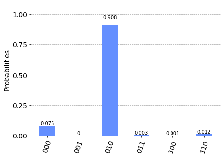
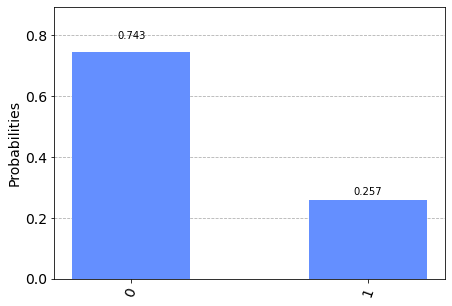
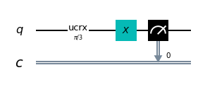
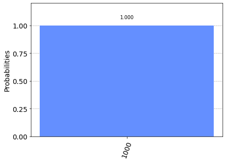
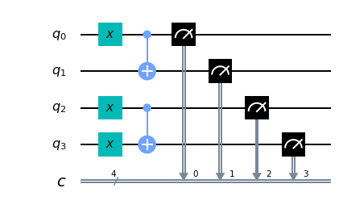
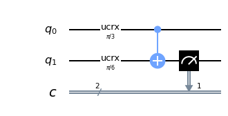
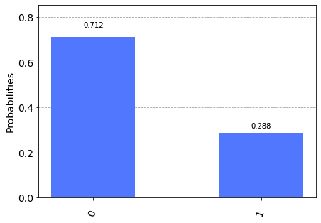
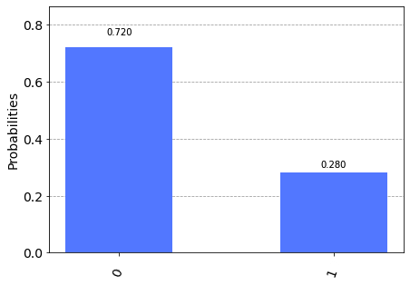

Porte quantistiche NOT e C-NOT
Gli operatori dei tradizionali linguaggi di programmazione di alto livello sono tradotti dai compilatori in brevi sequenze di istruzioni in linguaggio macchina
e a loro volta tali istruzioni sono implementate all'interno dei microprocessori in microprogrammazione
le cui microistruzioni utilizzano operatori logici e matematici realizzati direttamente a livello circuitale.
Ad esempio, in questo frammento di codice in linguaggio C
int v1, v2;
//….
int v = v1 ^ v2;v1 ^ v2 (cioè il calcolo v1 xor v2 eseguito bit a bit) viene tradotta in assembly x86_64 così:mov eax, DWORD PTR [rbp-4]
xor eax, DWORD PTR [rbp-8]
mov DWORD PTR [rbp-12], eaxmov copia il valore della variable v1 nel registro eax,
la seconda istruzione xor esegue l'or esclusivo (lo xor appunto) bit a bit tra il registro eax e la variable v2 e salva il risultato sullo stesso registro eax
e infine l'ultima istruzione mov assegna il valore del registro eax (che contiene il risultato dello xor bit a bit) alla variable v.La cosa che viene fatta notare è che lo xor è una istruzione implementata direttamente nel microprocessore ed esegue lo xor sui numeri interi a 32 bit (il registro eax contiene 32 bit) e che nel processore ci saranno (almeno) 32 microcircuiti che realizzano il calcolo dello xor, ciascun circuito operante (in parallelo e indipendentemente dagli altri) su una coppia di bit (uno proveniente dal registro, l’altro dalla memoria). A sua volta ogni microcircuito che calcola lo xor tra due bit è composto da transistor opportunamente collegati e infine tali transistor sono realizzati sfruttando la fisica dello stato solido che è alla base dei semiconduttori.
Al di là dei tecnicismi, la cosa che si vuole mettere in evidenza è che un operatore di un linguaggio di alto livello (l'operatore ^ del C in questo esempio) su un processore ordinario si appoggia, nel suo livello più basso di astrazione (inaccessibile allo sviluppatore), sulla fisica dello stato solido poiché tale è la fisicità dello strato sottostante più basso (quella dei transistor, appunto).
Un ragionamento simile può essere fatto nella programmazione quantistica: scopo di questo post è mostrare come due operatori quantistici, a partire da un linguaggio di alto livello, sono implementati sfruttando opportuni fenomeni descritti dalla meccanica quantistica.
In particolare il post mostra i fenomeni quantistici sottostanti gli operatori NOT (più correttamente chiamato porta Pauli-X) e C-NOT (NOT Controllato, conosciuto anche come xor quantistico).
Il modello matematico del qubit
Il qubit è descritto matematicamente come uno spazio di Hilbert complesso bidimensionale. La base canonica di questo spazio si indica (usando la notazione di Dirac) con
$$\{|0\rangle,|1\rangle\}$$
che scritta nella forma della base dei vettori delle componenti è
$$\{\begin{bmatrix} 1 \\ 0 \\ \end{bmatrix},\begin{bmatrix} 0 \\ 1 \\ \end{bmatrix}\}$$
e ciascun elemento della base corrisponde rispettivamente ai bit classici 0 e 1.
Come per ogni spazio vettoriale, ogni vettore dello spazio può essere scritto univocamente come combinazione lineare dei vettori della base
$$|\psi\rangle=\alpha|0\rangle + \beta|1\rangle$$
dove $\alpha$ e $\beta$ si chiamano ampiezze di probabilità e devono essere tali che i loro moduli al quadrato (che sono densità di probabilità)
debbono soddisfare l'uguaglianza $|\alpha|^2 + |\beta|^2 = 1$
La meccanica quantistica dice che se si effettua una misura (rispetto alla base) si può soltanto ottenere lo stato $|0\rangle$ (corrispondente al bit 0)
con probabilità $|\alpha|^2$ oppure lo stato $|1\rangle$ (corrispondente al bit 1) con probabilità $|\beta|^2$.
L'operatore NOT
L'operatore quantistico NOT, che da adesso sarà chiamato con il suo nome più appropriato di porta Pauli-X agisce su un singolo qubit
e il suo scopo è di invertire il qubit passato rispetto alla base canonica (operazione che corrisponde a una rotazione rispetto all'asse X
sulla sfera di Bloch, si veda Sfera di Bloch su Wikipedia)
Matematicamente bisogna quindi trovare una matrice hermetiana e unitaria (perchè tutti gli operatori quantistci tali devono essere)
che inverta gli stati in maniera tale che:
$$\alpha|0\rangle + \beta|1\rangle \rightarrow \beta|0\rangle + \alpha|1\rangle$$
Una tale matrice è
$$X=\left[\begin{matrix} 0 & 1 \\ 1 & 0 \end{matrix} \right]$$
Che la matrice $X$ sia hermetiana è evidente: essa contiene solo elementi reali ed è simmetrica.
È unitaria perché la sua trasposta coniugata (che è anche la trasposta essendo presenti solo elementi reali) coincide con la sua inversa
e la verifica è un semplice calcolo
$$XX^\dag=XX=\left[\begin{matrix} 0 & 1 \\ 1 & 0 \end{matrix} \right] \left[\begin{matrix} 0 & 1 \\ 1 & 0 \end{matrix} \right]= \left[\begin{matrix} 1 & 0 \\ 0 & 1 \end{matrix} \right] = I$$
Analogamente si dimostra che $X^\dag X=I$ per cui vale $X^\dag=X^{-1}$
Dal punto di vista fisico la realizzazione della porta Pauli-X dipende da come il computer quantistico è realizzato dal punto di vista hardware;
non è scopo di questo post entrare nella realizzazione ingegneristica dei qubit, ma giusto per fissare le idee, se ad esempio il qubit fosse realizzato tramite spin di un elettrone,
la porta Pauli-X sarebbe realizzata provocando una rotazione di $\pi$ intorno all'asse X dello spin dell'elettrone.
Test della porta Pauli-X su qubit in stato puro
Si osservi il seguente frammento di codice Python con Qiskit scritto per essere eseguito all'interno di un Jupyter Notebook utilizzando come backend sia il simulatore 'qasm_simulator' di IBM che il computer quantistico 'ibmq_london' di IBM.
q = QuantumRegister(3, 'q')
c = ClassicalRegister(3, 'c')
circuit = QuantumCircuit(q, c)
circuit.x(1)
circuit.x(2)
circuit.x(2)
circuit.measure(q, c)


che è del tutto equivalente al risultato ottenuto con il simulatore a meno di piccole differenze nella distribuzione delle probabilità riconducibili a rumori.Osservando il risultato possiamo avere la prova sperimentale di quanto affermato sopra riguardo al comportamento della porta Pauli-X e possiamo concludere che in assenza di stati di sovrapposizione il comportamento della porta Pauli-X è del tutto paragonabile all'operatore NOT dei linguaggi tradizionali (come ad esempio l'operatore
! del C).Infatti:
Test della porta Pauli-X su qubit in sovrapposizione di stati
La sovrapposizione di stati è una peculiarità dei qubit e non ha una corrispondenza nei bit ordinari.
Ci si pone infatti la seguente domanda: qual è il comportamento del qubit in sovrapposizione di stati se a esso viene applicato l'operatore quantistico NOT, ovverosia la porta Pauli-X?
Si dimostra facilmente che, dato un qubit in sovrapposizione di stati
$$|\psi\rangle=\alpha|0\rangle + \beta|1\rangle$$
la porta Pauli-X inverte che ampiezze di probabilità, ovverosia il qubit dopo una applicazione della porta Pauli-X si porterà nello stato
$$not |\psi\rangle=\beta|0\rangle + \alpha|1\rangle$$
La dimostrazione è la seguente: scrivendo l'applicazione della porta al vettore nella forma dei vettori delle componenti rispetto alla base canonica
ed eseguendo un passaggio di calcolo
$$X|\psi\rangle=\left[\begin{matrix} 0 & 1 \\ 1 & 0 \end{matrix} \right] \left[\begin{matrix} \alpha \\ \beta \end{matrix} \right] = \left[\begin{matrix} \beta \\ \alpha \end{matrix} \right] $$
e tornando nello spazio vettoriale dei qubit si ottiene appunto $\beta|0\rangle + \alpha|1\rangle$, ovverosia l'inversione delle ampiezze di probabilità.
Passando al calcolatore, si sarebbe tentati di usare la porta Hadamard per mettere il qubit in una sovrapposizione di stati; ma ai fini dimostrativi non è molto utile
in quando applicando la porta Hadamard allo stato $|0\rangle$ accade che $\alpha$ e $\beta$ sono entrambi uguali a $\frac{1}{\sqrt{2}}$
e l'effetto inversione non si vedrebbe bene. Meglio quindi impostare $\alpha$ e $\beta$ con valori diversi.
Si osservi il seguente frammento di codice Python con Qiskit scritto per essere eseguito all'interno di un Jupyter Notebook
utilizzando come backend sia il simulatore 'qasm_simulator' di IBM che il computer quantistico 'ibmq_london' di IBM.
q = QuantumRegister(1, 'q')
c = ClassicalRegister(1, 'c')
circuit = QuantumCircuit(q, c)
circuit.ucrx([np.pi/3], [], 0)
circuit.measure(q, c)

mentre il risultato eseguito sempre con un numero di shot=8192 sul computer quantistico IBM 'ibmq_london' è il seguente:
L'operatore
ucrx con argomento $\frac{\pi}{3}$ effettua una rotazione $\theta=\frac{\pi}{3}$ (ovverosia 60°) intorno all'asse $x$ sul qubit 0
per cui $\alpha=\cos \frac{\theta}{2}=\cos \frac{\frac{\pi}{3}}{2}=\cos \frac{\pi}{6}=\frac{\sqrt{3}}{2}$
e quindi la densità di probabilità (che è il quadrato dell'ampiezza) è $|\alpha|^2=\frac{3}{4}=0.75$ e necessariamente la densità di probabilità $|\beta|^2=\frac{1}{4}=0.25$
e difatti se si va a misurare il qubit 0 si ha una probabilità del 75% di ottenere lo stato $|0\rangle$ e del 25% di ottenere $|1\rangle$.Adesso si modifica il programma aggiungendo una porta Pauli-X a seguire l'applicazione della porta
ucrx.
Qui il codice:q = QuantumRegister(1, 'q')
c = ClassicalRegister(1, 'c')
circuit = QuantumCircuit(q, c)
circuit.ucrx([np.pi/3], [], 0)
circuit.x(0)
circuit.measure(q, c)
e il cui risultato eseguito con un numero di shot=8192 sul simulatore IBM 'qasm_simulator' è il seguente:

Nota: Data la natura stocastica di questo codice, i singoli specifici risultati possono variare. Si consideri di eseguire il codice più volte.
Sopra si era detto che la porta Pauli-X effettua una rotazione di $\pi$ intorno all'asse X della sfera di Bloch: programmaticamente l'operatore Pauli-X quindi è del tutto equivalente allo statement:
circuit.ucrx([np.pi], [], [i])L'operatore C-NOT
Facendo di nuovo un parallelo ideale con un linguaggio di programmazione di alto livello, si immagini di avere il seguente frammento di codice C:
bool control, target;
//….
if (control)
target = !target;cmp BYTE PTR [rbp-1], 0
je .L2
xor BYTE PTR [rbp-2], 1
.L2:La prima istruzione
cmp effettua una comparazione tra il valore della variabile con la costante 0 e imposta a 1 un flag del processore se il confronto dà esito di uguaglianza,
altrimenti quel flag viene impostato a 0;
la seconda istruzione je è un salto condizionato (nel senso di controllato): salta a L2 se quel flag è 0 (e quindi se la variabile c vale 0, cioè false)
mentre la terza istruzione esegue uno xor tra la variabile b e il valore 1 (e per l'algebra booleana corrisponde a fare un not) e quindi salva il risultato sulla variabile b stessa.Anche questa volta un costrutto relativamente semplice del linguaggio di alto livello è implementato con una piccola sequenza di istruzioni in linguaggio macchina e a loro volta ogni istruzione, realizzata in microprogammazione, utilizza della circuiteria interna del processore (in questo caso il flag di confronto e il salto condizionato) a sua volta costruita con dei semiconduttori (transitor) basati sulla fisica dello stato solido. Sui computer quantistici a spin, si è visto che la porta NOT (o meglio Pauli-X) è implementata tramite la rotazione dello spin; la domanda che ci si pone adesso è se esiste un meccanismo quantistico di base su cui appoggiarsi per implementare un NOT controllato.
Prima di rispondere a questa domanda è opportuno entrare nel dettaglio dell'operatore C-NOT dal punto di vista matematico.
La tabella di verità del costrutto NOT controllato su una coppia di bit ordinari è la seguente:
| input | output | ||
| control | target | control | target |
| 0 | 0 | 0 | 0 |
| 0 | 1 | 0 | 1 |
| 1 | 0 | 1 | 1 |
| 1 | 1 | 1 | 0 |
La tabella di verità del costrutto C-NOT quantistico su una coppia di qubit non in sovrapposizione di stati è naturalmente la seguente:
| input | output | ||
| control | target | control | target |
| $|0\rangle$ | $|0\rangle$ | $|0\rangle$ | $|0\rangle$ |
| $|0\rangle$ | $|1\rangle$ | $|0\rangle$ | $|1\rangle$ |
| $|1\rangle$ | $|0\rangle$ | $|1\rangle$ | $|1\rangle$ |
| $|1\rangle$ | $|1\rangle$ | $|1\rangle$ | $|0\rangle$ |
Ad esempio, osservando la penultima voce della tabella, rapprentanto i vettori di input $|1\rangle$ e $|0\rangle$ nella base canonica si ottengono i due vettori delle componenti $$\begin{bmatrix} 0 \\ 1 \\ \end{bmatrix}, \begin{bmatrix} 1 \\ 0 \\ \end{bmatrix}$$ e concatenandoli si ottiene il seguente vettore $$\begin{bmatrix} 0 \\ 1 \\ 1 \\ 0 \\ \end{bmatrix}$$ e moltiplicando la matrice per questo vettore: $$ \left[\begin{matrix} 1 & 0 & 0 & 0 \\ 0 & 1 & 0 & 0 \\ 0 & 0 & 0 & 1 \\ 0 & 0 & 1 & 0 \end{matrix} \right] \begin{bmatrix} 0 \\ 1 \\ 1 \\ 0 \\ \end{bmatrix} = \begin{bmatrix} 0 \\ 1 \\ 0 \\ 1 \\ \end{bmatrix} $$ che corrisponde nello spazio vettoriale iniziale alla coppia di vettori ${|1\rangle}$ e ${|1\rangle}$ come volevasi dimostrare.
Analogamente per tutte le altre voci della tabella di verità si dimostra che la matrice $CNOT$ implementa effettivamente l'operatore C-NOT.
Affiché la matrice $CNOT$ sia un valido operatore quantistico deve essere hermetiana e unitaria. Che sia hermetiana è evidente: essa contiene solo elementi reali ed è simmetrica.
È unitaria perché la sua trasposta coniugata (che è anche la trasposta essendo presenti solo elementi reali) coincide con la sua inversa e la verifica è un semplice calcolo $$CNOT \cdot CNOT^\dag=CNOT \cdot CNOT=\left[\begin{matrix} 1 & 0 & 0 & 0 \\ 0 & 1 & 0 & 0 \\ 0 & 0 & 0 & 1 \\ 0 & 0 & 1 & 0 \end{matrix} \right] \left[\begin{matrix} 1 & 0 & 0 & 0 \\ 0 & 1 & 0 & 0 \\ 0 & 0 & 0 & 1 \\ 0 & 0 & 1 & 0 \end{matrix} \right]= \left[\begin{matrix} 1 & 0 & 0 & 0 \\ 0 & 1 & 0 & 0 \\ 0 & 0 & 1 & 0 \\ 0 & 0 & 0 & 1 \end{matrix} \right] = I$$ Analogamente si dimostra che $CNOT^\dag \cdot CNOT=I$ per cui vale $CNOT^\dag=CNOT^{-1}$
È arrivato il momento di rispondere alla domanda pendente, cioè se esiste un fenomeno quantistico su cui realizzare il costrutto C-NOT; infatti il grande vantaggio della computazione quantistica rispetto alla computazione tradizionale è quello di poter applicare gli operatori ai qubit quando questi si trovano in una sovrapposizione di stati; affinché l'operatore C-NOT sia applicabile ai qubit in tale situazione senza effettuare alcuna misurazione (che farebbe collassare in qubit in uno stato puro), esso deve essere realizzato nativamente sfruttando un qualche fenomeno quantistico che coinvolga due qubit: tale fenomeno esiste, e si chiama chiama entanglement (per approfondimenti si veda Entanglement quantistico su Wikipedia)
Test della porta C-NOT su qubit in stati puri
Si osservi il seguente frammento di codice Python con Qiskit scritto per essere eseguito all'interno di un Jupyter Notebook utilizzando come backend sia il simulatore 'qasm_simulator' di IBM che il computer quantistico 'ibmq_london' di IBM.
q = QuantumRegister(4, 'q')
c = ClassicalRegister(4, 'c')
circuit = QuantumCircuit(q, c)
circuit.cx(0, 1)
circuit.x(3)
circuit.cx(2, 3)
circuit.measure(q, c)


mentre il risultato eseguito sempre con un numero di shot=8192 sul computer quantistico IBM 'ibmq_london' è il seguente:
Osservando il risultato possiamo avere la prova sperimentale di quanto affermato sopra riguardo al comportamento della porta C-NOT per quanto riguarda le prime due voci della tabella di verità mostrata sopra: infatti l'input ai 4 qubit corrisponde agli input delle prime due voci della tabella, (${|0\rangle}$ e ${|0\rangle}$ per la prima riga e ${|0\rangle}$ e ${|1\rangle}$ per la seconda riga) e per quanto riguarda l'output vale quanto segue:
Il seguente frammento di codice:
q = QuantumRegister(4, 'q')
c = ClassicalRegister(4, 'c')
circuit = QuantumCircuit(q, c)
circuit.x(0)
circuit.cx(0, 1)
circuit.x(2)
circuit.x(3)
circuit.cx(2, 3)
circuit.measure(q, c)

e il cui risultato eseguito con un numero di shot=8192 sul simulatore IBM 'qasm_simulator' è il seguente:

Osservando il risultato possiamo avere la prova sperimentale di quanto affermato sopra riguardo al comportamento della porta C-NOT per quanto riguarda le ultime due righe della tabella di verità mostrata sopra: infatti l'input ai 4 qubit corrisponde agli input delle ultime due voci della tabella, (${|1\rangle}$ e ${|0\rangle}$ per la penultima riga e ${|1\rangle}$ e ${|1\rangle}$ per l'ultima riga) e per quanto riguarda l'output vale quanto segue:
È possibile quindi concludere che in assenza di stati di sovrapposizione il comportamento della porta C-NOT è del tutto paragonabile al costrutto NOT-controllato dei linguaggi tradizionali.
Test della porta C-NOT con sovrapposizione
Ci si pone adesso la seguente domanda: qual è il comportamento della porta C-NOT applicata a due qubit in sovrapposizione di stati?
Dati due qubit, il primo di control e il secondo di target in entanglement e in sovrapposizione di stati
$$q _0=\alpha|0\rangle + \beta|1\rangle$$
$$q _1=\gamma|0\rangle + \delta|1\rangle$$
e si effettui una rotazione di $\theta=\frac{\pi}{3}$ (ovverosia 60°) intorno all'asse $x$ sul qubit 0 e quindi $\alpha=\cos \frac{\theta}{2}=\cos \frac{\frac{\pi}{3}}{2}=\cos \frac{\pi}{6}=\frac{\sqrt{3}}{2}$
e quindi la densità di probabilità $|\alpha|^2=\frac{3}{4}=0.75$ e necessariamente la densità di probabilità $|\beta|^2=\frac{1}{4}=0.25$.
Si effettui inoltre una rotazione di $\theta=\frac{\pi}{6}$ (ovverosia 30°) intorno all'asse $x$ sul qubit 1 e quindi $\gamma=\cos \frac{\theta}{2}=\cos \frac{\frac{\pi}{6}}{2}=\cos \frac{\pi}{12}=\frac{\sqrt{6} + \sqrt{2}}{4}$
e quindi la densità di probabilità $|\gamma|^2=\frac{2 + \sqrt{3}}{4} \simeq 0.933013$ e necessariamente l'ampiezza di probabilità $|\delta|^2=\frac{2 + \sqrt{3}}{4} \simeq 0.0669873$.
Passando al calcolatore, si osservi il seguente frammento di codice Python con Qiskit scritto per essere eseguito all'interno di un Jupyter Notebook
utilizzando come backend sia il simulatore 'qasm_simulator' di IBM che il computer quantistico 'ibmq_london' di IBM.
q = QuantumRegister(2, 'q')
c = ClassicalRegister(2, 'c')
circuit = QuantumCircuit(q, c)
circuit.ucrx([np.pi/3], [], 0)
circuit.ucrx([np.pi/6], [], 1)
circuit.cx(0, 1)
circuit.measure(q[1], c[1])

e il cui risultato eseguito con un numero di shot=8192 sul simulatore IBM 'qasm_simulator' è il seguente:
mentre il risultato eseguito sempre con un numero di shot=8192 sul computer quantistico IBM 'ibmq_london' è il seguente:
Nota: Data la natura stocastica di questo codice, i singoli specifici risultati possono variare. Si consideri di eseguire il codice più volte.L'output del programma consiste nella misura del qubit 1 (il target): la probabilità di ottenere $|0\rangle$ sul qubit 1 in uscita è data dalla somma della prima e quarta riga della tabella di verità.
La probabilità della prima riga è data dal prodotto della probabilità del qubit 0 di essere $|0\rangle$ (che sappiamo essere 0.75) per la probabilità del qubit 1 di essere $|0\rangle$ (che sappiamo essere circa $0.933013$) e quindi circa $0.699760$.
La probabilità della quarta riga è data dal prodotto della probabilità del qubit 0 di essere $|1\rangle$ (che sappiamo essere 0.25) per la probabilità del qubit 1 di essere $|1\rangle$ (che sappiamo essere circa $0.066987$) e quindi circa $0.016746$.
Sommando le due probabilità si calcola la probabilità di ottenere $|0\rangle$ sul qubit 1 in uscita che è quindi $0.699760 + 0.016746 = 0.716220$ che è quanto ottenuto sperimentalmente (a meno di piccoli scostamenti dovuta alla natura stocastica). Analogamente si calcola che la probabilità di ottenere $|1\rangle$ sul qubit 1 in uscita è pari a $0.283780$, assai vicina alla probabilità determinata sperimentalmente.
Media
Download del codice completo
Il codice completo è disponibile su GitHub.
Questo materiale è distribuito su licenza MIT; sentiti libero di usare, condividere, "forkare" e adattare tale materiale come credi.
Sentiti anche libero di pubblicare pull-request e bug-report su questo repository di GitHub oppure di contattarmi sui miei canali social disponibili nell'angolo in alto a destra di questa pagina.